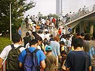
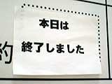
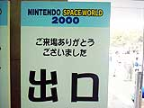

西暦2000年8月27日午後4時。館内にアナウンスが流れ、大盛況のうちにNINTENDOスペースワールド2000が閉幕しました。
今回の入場者数は17万2千人。残暑のなか、たくさんの人に足を運んでいただき、本当にありがとうございます。期待のゲームには出会えましたか？ イベントは楽しんでいただけたでしょうか？ お気に入りのグッズは買えましたか？ ちょっと、セレビィプレゼントコーナーの出口でインタビューしてみましょう。 |
|



|
|
セレビィをもらってうれしそうな翔太くん。毎日のように「ポケモン」で遊んでくれているそうです。
「今回初めて応募して（セレビィプレゼントに）当たったんです。座間市から来たんですけど、着いたのが3時なので大急ぎで回りました（笑）」とお母さん。来年は、ゆっくりしていってくださいね。 |
| 高橋 翔太（たかはし しょうた）くん 5歳 |
|
会場出口では、来場記念のプレゼントが配られています。プレゼントをもらってうれしそうにしているお子さんとご家族に、ちょっとお話を聞いてみました。
「コロコロコミックを見て、今年初めて来ました。（コスプレの）リンクに会って、子供達がすっごい喜んでたんですよ。来年もまた来ます」と、やさしいお母さん。ゲームが大好きな佳奈ちゃんは、ゲームボーイアドバンスの「ピノビィの大冒険」を気に入ってくれたようです。 |
国分 佳奈（こくぶ かな）ちゃん 10歳
むつ くん 7歳
宮本 えみか ちゃん 9歳 |
|
|
さて、会場の方もいよいよ静かになってきました。スタッフも疲れぎみですが、それでも、明るい笑顔で出口へ向かう子供達を見て、満足そうな表情をうかべています。皆さんが楽しんでくださったことが、彼らにとって一番の栄養剤なのでしょう。それに、会場で遊んでくれた皆さんの意見は、今後のゲーム作りにも大いに役立ってくれることと思いますので、その成果にもぜひ期待していてください。
多数様のご来場、誠にありがとうございました。 |